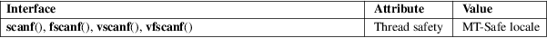

scanf, fscanf, vscanf, vfscanf − input FILE format conversion
Standard C library (libc, −lc)
#include <stdio.h>
int
scanf(const char *restrict format, ...);
int fscanf(FILE *restrict stream,
const char *restrict format, ...);
#include <stdarg.h>
int
vscanf(const char *restrict format,
va_list ap);
int vfscanf(FILE *restrict stream,
const char *restrict format, va_list
ap);
Feature Test Macro Requirements for glibc (see feature_test_macros(7)):
vscanf(),
vfscanf():
_ISOC99_SOURCE || _POSIX_C_SOURCE >= 200112L
The scanf() family of functions scans input like sscanf(3), but read from a FILE. It is very difficult to use these functions correctly, and it is preferable to read entire lines with fgets(3) or getline(3) and parse them later with sscanf(3) or more specialized functions such as strtol(3).
The scanf() function reads input from the standard input stream stdin and fscanf() reads input from the stream pointer stream.
The vfscanf() function is analogous to vfprintf(3) and reads input from the stream pointer stream using a variable argument list of pointers (see stdarg(3). The vscanf() function is analogous to vprintf(3) and reads from the standard input.
On success, these functions return the number of input items successfully matched and assigned; this can be fewer than provided for, or even zero, in the event of an early matching failure.
The value EOF is returned if the end of input is reached before either the first successful conversion or a matching failure occurs. EOF is also returned if a read error occurs, in which case the error indicator for the stream (see ferror(3)) is set, and errno is set to indicate the error.
|
EAGAIN |
The file descriptor underlying stream is marked nonblocking, and the read operation would block. | ||
|
EBADF |
The file descriptor underlying stream is invalid, or not open for reading. | ||
|
EILSEQ |
Input byte sequence does not form a valid character. | ||
|
EINTR |
The read operation was interrupted by a signal; see signal(7). | ||
|
EINVAL |
Not enough arguments; or format is NULL. | ||
|
ENOMEM |
Out of memory. |
For an explanation of the terms used in this section, see attributes(7).

C11, POSIX.1-2008.
C99, POSIX.1-2001.
fgets(3), getline(3), sscanf(3)